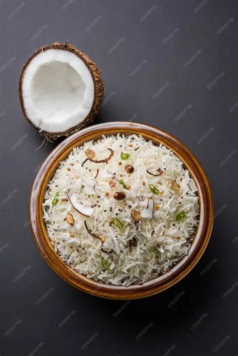

Coconut Rice
⭐⭐⭐⭐⭐ 4.8 Rating | ⏱ 10 Minutes | 🍽 4 Servings
Category
Lunch / Dinner
Difficulty
Easy
Calories
380 kcal
Cooking Style
Tempered
📋 Ingredients
- 2 cups cooked rice (cooled)
- 1 cup freshly grated coconut
- 1 tbsp coconut oil or ghee
- 1 tsp mustard seeds
- 1 tsp urad dal
- 1 tsp chana dal
- 8-10 cashews
- 2 green chillies (slit)
- 1 dry red chilli
- 1 sprig curry leaves
- 1/2 inch ginger (minced)
- pinch of hing (asafoetida)
- Salt to Taste
🍳 Required Utensils
- Non-stick pan or heavy-bottomed kadai
- spatula
- Mixing bowl
📖 Introduction
Coconut rice (Kobbari Annam) is a flavorful South Indian dish made by sautéing freshly grated coconut with aromatic spices, lentils, and cooked rice.
🔬 Principle
The core culinary principle relies on infusing fat-soluble flavors from mustard seeds, curry leaves, and chanas into oil or ghee, then tossing cooked rice with fresh coconut on low heat to release natural coconut oils without burning the flesh.
👨🍳 Procedure
- Cook and Cool the Rice
- Spread cooked rice on a wide plate to cool completely.
- Ensure grains are separate.
- Temper the Spices
- Heat oil/ghee in a kadai over medium heat.
- Add mustard seeds; once they splutter, add chana dal, urad dal, and cashews.
- Fry until light golden.
- Sauté Aromatics
- Add green chillies, red chilli, ginger, curry leaves, and hing.
- Sauté for 30 seconds until fragrant.
- Lower the heat to low, add freshly grated coconut, and sauté for 1–2 minutes just until the raw aroma disappears.
- Do not brown the coconut.
- Add cooled rice and salt.
- Gently fold until evenly mixed.
- Turn off heat, cover, and let sit for 5 minutes before serving.
⚠ Precautions
- Moderation is key for individuals monitoring saturated fat intake
- Ensure the coconut is strictly fresh to prevent swift spoilage in warm climates.
💡 Chef Tips
- While coconut rice is traditionally eaten alone or with kurma, pairing it alongside hot, puffed pooris creates a rich contrast between soft, fragrant rice and crispy fried bread.
- Always use fresh grated coconut rather than desiccated for the best moisture and flavour profile.
- Mix 1/2 tsp oil into warm rice before cooling to keep grains completely distinct.
🥗 Nutrition Facts
| Nutrient | Amount |
|---|---|
| Calories | 320 kcal |
| Protein | 5 g |
| Carbohydrates | 42 g |
| Fat | 15 g |
| Fiber | 4 g |
🍽 Serving Suggestions
- Serve warm with potato kurma, vegetable stew, or mixed vegetable sagu.
- Pair with fried papadums, coconut chutney, or a fresh cucumber raita.
🌿 Health Benefits
- Fresh coconut contains medium-chain triglycerides (MCTs) that provide quick energy.
- Curry leaves and lentils add dietary fiber and antioxidants.
✅ Result
A fluffy, non-sticky rice dish featuring a subtle sweetness balanced by crisp lentils, nutty cashews, and gentle warmth from green chillies.
🎥 Watch Recipe Video
Learn the complete recipe by watching the step-by-step video.
▶ Watch on YouTube